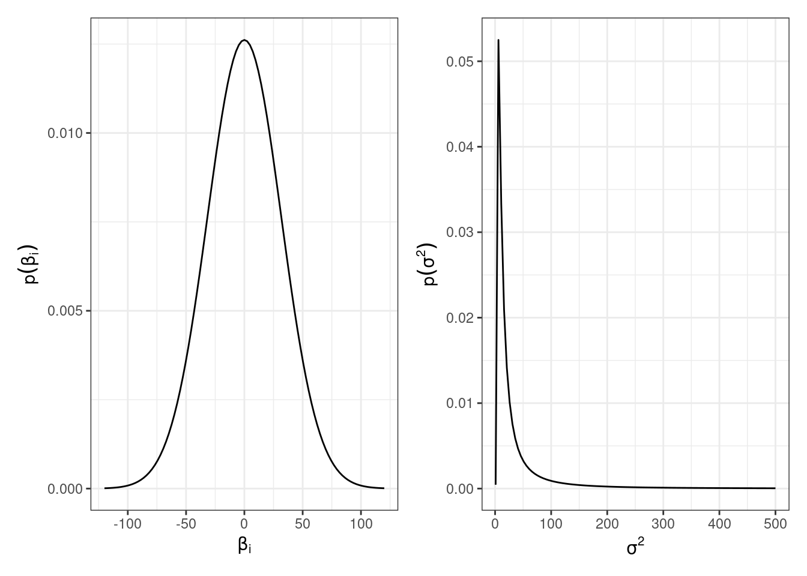
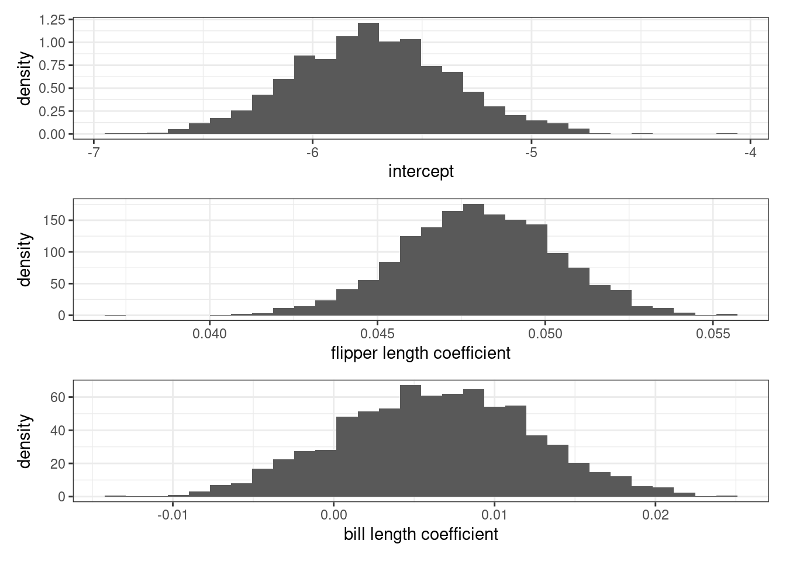

See libraries used in these notes
library(tidyverse)
library(latex2exp)
library(patchwork)
library(tidymodels)
library(scatterplot3d)
library(palmerpenguins)
library(mvtnorm)
library(coda)
library(animation)library(tidyverse)
library(latex2exp)
library(patchwork)
library(tidymodels)
library(scatterplot3d)
library(palmerpenguins)
library(mvtnorm)
library(coda)
library(animation)We set up the model,
\[ \begin{aligned} \mathbf{y} | X, \beta, \sigma^2 &\sim MVN(X\beta, \sigma^2 I)\\ \beta &\sim MVN(\beta_0, \Sigma_0)\\ 1/\sigma^2 &\sim \text{gamma}(\nu_0/2, \nu_0 \sigma_0^2/2) \end{aligned} \] and derived the full conditionals
\[ \begin{aligned} \beta | \mathbf{y}, X, \sigma^2 &\sim MVN(\mathbf{m}, V),\\ 1/\sigma^2 | \mathbf{y}, X, \beta & \sim \text{gamma}([\nu_0 + n]/2, [\nu_0 \sigma_0^2 + SSR(\beta)]/2), \end{aligned} \]
where
\[ \begin{aligned} V = Var[\beta | \mathbf{y}, X, \sigma^2] &= (\Sigma_0^{-1} + X^TX / \sigma^2)^{-1},\\ \mathbf{m} = E[\beta | \mathbf{y}, X, \sigma^2] &= (\Sigma_0^{-1} + X^T X/ \sigma^2)^{-1}(\Sigma_0^{-1} \beta_0 + X^T\mathbf{y} / \sigma^2). \end{aligned} \]
To complete model specification, we must choose \(\beta_0\), \(\Sigma_0\), \(\sigma_0^2\) and \(\nu_0\).
If we know very little about the relationships between \(X\) and \(\mathbf{y}\), we might wish to consider a “diffuse” prior that prescribes a large mass of uncertainty around each parameter.
\[ \begin{aligned} \beta & \sim MVN(0, 1000 I)\\ 1/\sigma^2 &\sim \text{gamma}(1, 10) \end{aligned} \]

The Gibbs sampler for our penguin example:
# our example examines just a subset of the penguin data
penguins_subset = penguins %>%
select(body_mass_g, flipper_length_mm, bill_length_mm) %>%
drop_na() %>%
mutate(body_mass_kg = body_mass_g / 1000) %>%
select(-body_mass_g)
X = penguins_subset %>%
select(-body_mass_kg) %>%
mutate(one = rep(1, nrow(penguins_subset))) %>%
relocate(one) %>%
as.matrix()
y = select(penguins_subset,
body_mass_kg) %>%
as.matrix()set.seed(360)
# prior hyperparameters
p = 2 # number of covariates
Sigma0 = 1000 * diag(rep(1, p+1)) # p + 1 for intercept term
b0 = rep(0, p + 1)
nu0 = 2
sigma02 = 10
n = nrow(y)
# starting values
## note: gamma = 1 / sigma^2
gamma = 1 / var(penguins_subset$body_mass_kg)
# values we should compute just once
SigmaInv = solve(Sigma0)
X2 = t(X) %*% X
Xy = t(X) %*% y
SIB0 = SigmaInv %*% b0
a = (nu0 + n) / 2
nu0s02 = nu0 * sigma02
## empty objects to fill
BETA = NULL
GAMMA = NULL
S = 2000
for (s in 1:S) {
### UPDATE BETA
V = solve(SigmaInv + (gamma * X2))
m = V %*% (Xy * gamma) # simplified since b0 = 0
beta = rmvnorm(1, mean = m, sigma = V)
### UPDATE SIGMA
SSR1 = (y - (X %*% t(beta)))
SSRB = t(SSR1) %*% SSR1
gamma = rgamma(1, a, ((nu0s02 + SSRB) / 2))
### SAVE STATES
GAMMA = c(GAMMA, gamma)
BETA = rbind(BETA, beta)
}effectiveSize(BETA)var1 var2 var3
2000 2000 2000 effectiveSize(GAMMA)var1
2000 How do posterior mean estimates compare to the OLS estimates?
posteriorMean = apply(BETA, 2, mean)
OLS = lm(body_mass_kg ~ flipper_length_mm + bill_length_mm, data = penguins_subset)
OLS = OLS$coefficients
rbind(OLS, posteriorMean) (Intercept) flipper_length_mm bill_length_mm
OLS -5.736897 0.04814486 0.006047488
posteriorMean -5.723741 0.04801443 0.006336029We might have figured out this is what we were going to see already based on the the fact that the expressions for \(E[\beta | \mathbf{y}, X]\) and \(Var[\beta | \mathbf{y}, X]\) look just like \(E[\hat{\beta}_{OLS} | \beta]\) and \(Var[\hat{\beta}_{OLS} | \beta]\) when the prior information is diffuse.
What was the point of all that extra work? Well, we don’t just have a point estimate and a confidence interval, we have a whole posterior! We can quantify uncertainty about \(\beta\) in an easy and intuitive way.
Using the posterior, we may find 95% posterior CI, compute \(p(\beta_i > 0 | \mathbf{y}, X)\), compute \(p(\beta_i > \beta_j | \mathbf{y}, X)\), compute the posterior median, and a whole host of additional queries quickly and intuitively.
Let’s take a look at the marginal posteriors.

Is flipper length or bill length a “more important” predictor of penguin body mass? Why?
For each iteration of our Gibbs sampler, we’re sampling a hyperplane, i.e. a set of \(\beta\)s.

Discuss how autocorrelation of \(\beta\)s would affect our sampler based on the animation above.
What if \(p > n\)? In words: what if we have more predictors than observations? \(X\) will be wide and therefore have linearly dependent columns.
In this case, \(X^T X\) is \(p \times p\) but is of rank \(n < p\), i.e. \(X^TX\) is not full rank and thus not invertible. Therefore, \(\hat{\beta}_{OLS}\) satisfying \((X^T X)\hat{\beta}_{OLS} = X^T \mathbf{y}\) does not exist uniquely.
Separately, in the case of multicollinearity, where the columns of \(X\) are highly correlated, some eigenvalues of \(X^TX\) will be very small, which means \((X^TX)^{-1}\) will have very large eigenvalues, i.e. \(Var(\hat{\beta}_{OLS})\) will be very large.
Intuitively: we can fix this by shrinking some of the \(\beta_i\) towards zero (reducing \(p\)).
Algebraically: one way we can fix this is by adding some positive quantity on the diagonals.
Frequentists call this sort of algebraic fix “ridge regression” and define the problem thus:
\[ \hat{\beta}_{ridge} = \underset{\beta}{\mathrm{argmin}} \underbrace{(\mathbf{y} - X\beta)^T (\mathbf{y} - X \beta)}_{\text{SSR}(\beta)} + \underbrace{\lambda \beta^T \beta}_{L_2^2 ~\text{penalty}} \] where \(\lambda\) is a tuning parameter called the “ridge coefficient”.
Bayesians obtain the same objective via the following prior on \(\beta\),
\[ \beta | \sigma^2, \lambda \sim MVN(0, \sigma^2 I /\lambda) \]
Show that \(\hat{\beta}_{ridge} = E[\beta | \mathbf{y}, X, \sigma^2, \lambda] = ((X^TX) + \lambda I)^{-1} X^T \mathbf{y}\).